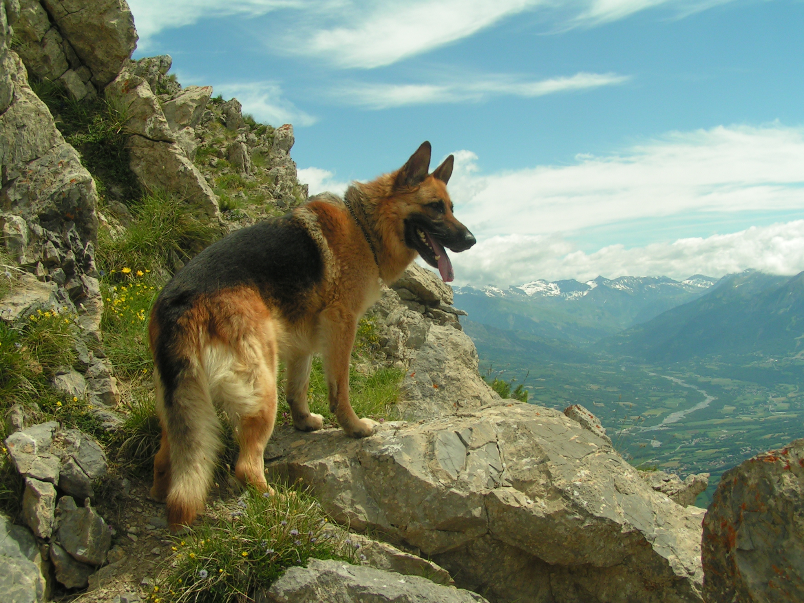

Німецька вівчарка
Німецька вівчарка — порода собак, виведена у Німеччині в 1899 році. Породу вивели спеціально
для догляду за вівцями, тому собаку й називають вівчаркою.
Якщо у Британії,
Франції й Бельгії є по кілька вівчарських порід — і довгошерстих, і жорсткошерстих, і
короткошерстих, — то німці з великої кількості селянських вівчарських собак вивели
лише одну породу.
Ще наприкінці XIX століття німецьку вівчарку вважали плебейським собакою
Більше того, багато любителів імпортних англійських порід вважали, що розводити «собак вовчого типу шкідливо» — але знайшлася
людина, яка створила на їхній основі найкращого службового собаку світу: Макс фон Штефаніц, який своє життя присвятив
створенню й удосконаленню німецької вівчарки. Він стверджував, що німецька вівчарка — це насамперед робочий собака: і інтелект, і краса,
і правильність будови вівчарки — усе забезпечує його працездатність та відданість господарю
Окрім власне вівчарської служби, Штефаніц прагнув знайти для німецької вівчарки й іншу роботу,
таку, яка б розкрила всі можливості цих собак і зробила їх для всіх корисними. Німецьку вівчарку узяли на озброєння
поліція й армія, що шукали альтернативу дорогим англійським породам. Німецькі вівчарки виявилися першокласними
поліцейськими й військовими собаками: у часи Першої світової війни вони прокладали телефонні кабелі, підтримували зв'язок,
шукали поранених, їх використовували під час патрулювання й варти. А після армії та поліції майже всі
країни світу взяли на службу німецьких вівчарок.
Екстер'єр
Німецька вівчарка дуже красива. Можна зрозуміти тих, хто захоплюється гармонією будови й надзвичайною красою рухів.
Це і стрункий, і доволі сильний собака. У нього загострена морда з чорною маскою. Вуха стоячі.
Гармонійні, плавні лінії корпуса. Пружна спина, сильні пружні кінцівки. Колір має бути яскравим — чорно-рудим із чорною
маскою на морді та чорною спиною, смугасто-сірим, чорним. У німецької вівчарки круглі лапи з дуже твердими подушечками.
Призначення
Вони мають гарний нюх і сміливий характер, ці собаки витривалі, невибагливі та починають працювати
з найменшого віку. Німецькі вівчарки розумні й прагнуть співпрацювати з людиною. Багатьох любителів ця порода приваблює
не тільки як робочий собака, але й як собака-компаньйон.
У Німеччині щорічно проводять чемпіонат
німецьких вівчарок з випасання. Для вівчарок, які працюють пастухами, є окремі ранги на найголовнішому конкурсі краси для
вівчарок — Головній виставці вівчарок у Німеччині. Багато провідних розплідників Німеччини виставляють
своїх собак у цьому класі.
Німецькі вівчарки — пошукові й прикордонні
собаки, сапери й митники, розвідувачі-рятувальники, поводирі сліпих та охоронці.
Подібні породи
Завжди існували німецькі вівчари з трохи довшою шерстю, довгошерсті.
У них за вухами й на тильному боці кінцівок — «очоси», на корпусі шерсть так само трохи довша.
Такі цуценята народжуються й у стандартних німецьких вівчарів. У Європі вони дуже популярні як
собаки-компаньйони, бо дуже розумні й красиві.
Німецький вівчар — собака, як кажуть,
«вище середнього зросту», його зріст становить 58 — 65 сантиметрів. Щоправда, завжди були любителі,
яким здавалося, що гарний собака має бути ще й великим. Тож вони намагалися розводити дуже великих вівчарів — принаймні більших
за 75 сантиметрів. Такі великі вівчарки втрачали рухливість і витривалість, і німецького вівчара за всю його історію
не раз «повертали» у рамки стандарту. Але в Радянському Союзі було розроблено новий стандарт (зріст до 70 см), і таких великих вівчарів
почали називати східноєвропейськими. Зараз у країнах колишнього Радянського Союзу розводять в основному справжніх німецьких вівчарів, але свої
шанувальники збереглися й у східноєвропейських. Основна ознака цієї породи — чорна спина зі сріблясто-сірими підпалинами.